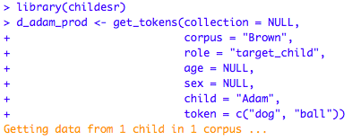
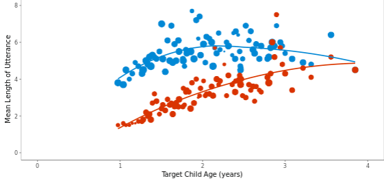

html`<div class="cdb-lead" style="text-align:center">childes-db ${site_stats.version} contains
${site_stats.n_transcripts.toLocaleString()} transcripts of speech to and from
${site_stats.n_children.toLocaleString()} children, across
${site_stats.n_corpora} corpora in ${site_stats.n_collections} collections.</div>`
childes-db
A flexible and reproducible interface to CHILDES

API Tutorial
Get a hands-on walk-through on accessing childes-db
through R.

Visualizations
Explore the data in childes-db using our interactive
applications.

The childes-db project is an open database storing child language datasets from CHILDES in a well-documented, easily accessible, tabular format. It also provides a versioning system for corpora and tools to facilitate reproducible research with child language corpora. Researchers can interface with CHILDES through the interactive visualizations on this site, the childesr R package, the childespy Python package, or directly through SQL.
For a complete overview along with examples, refer to our paper in Behavior Research Methods:
*Sanchez, A., *Meylan, S. C., Braginsky, M., MacDonald, K. E., Yurovsky, D., & Frank, M. C. (2019). childes-db: A flexible and reproducible interface to the Child Language Data Exchange System. Behavior Research Methods, 51(4), 1928–1941. (* indicates co-first authorship)